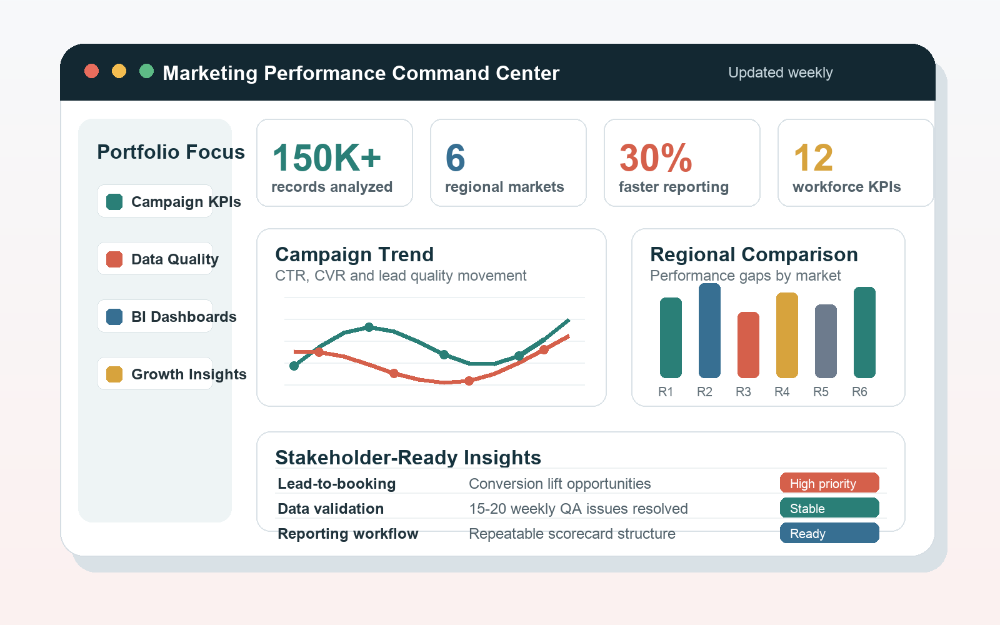

01 / Data quality
Validate the signal
Source checks, joins, missing values, and field definitions turn raw records into reliable evidence.
Vancouver, BC / UBC Master of Business Analytics
MARKETING ANALYTICS / BUSINESS INTELLIGENCE / DECISION SUPPORT
I turn marketing, operational, CRM, and workforce data into trusted KPIs, repeatable reporting, and recommendations that teams can act on.

Signal / evidence
My portfolio is grounded in the analyst workflow: prepare reliable data, define the right KPI, surface the pattern, and communicate the decision value.
Analytics in motion / 01-03
Reliable decisions move through a clear sequence: validate the records, track the right signal, and translate the pattern into action.
Source checks, joins, missing values, and field definitions turn raw records into reliable evidence.
Repeatable views surface regional movement and shorten the path from reporting request to answer.
Concise findings connect a measurable change to a business priority, an owner, and a next step.
Selected work / 01-03
Each case connects the problem, the data, the analytical workflow, and the action that the work made possible.
Structured multi-source campaign data into recurring KPI reporting across six regional markets.
Open case 01Connected CRM, booking, and marketing data to make acquisition and service delivery decisions clearer.
Open case 02Integrated structured datasets, defined workforce KPIs, and translated turnover drivers into recommendations.
Open case 03Operating model
I care about the whole path, not only the final chart. Strong reporting depends on clear questions, sound data, and plain-language communication.
Clarify the decision, audience, comparison, and KPI before touching the dataset.
Check source consistency, joins, missing values, field definitions, and assumptions.
Turn trends, gaps, and drivers into concise summaries that stakeholders can scan.
Connect the finding to prioritised actions for marketing, operations, or management.
Experience / current focus
My background spans marketing performance, reporting workflows, finance operations, and graduate analytics work.
Marketing and operations analytics for leads, bookings, conversion rates, customer acquisition cost, revenue per listing, and turnaround time.
150K+ rows of multi-source campaign data, six-region KPI reporting, SQL summaries, and faster recurring reporting workflows.
120K+ rows, 12 workforce KPIs, turnover risk analysis, and stakeholder-ready recommendations built at UBC Sauder.